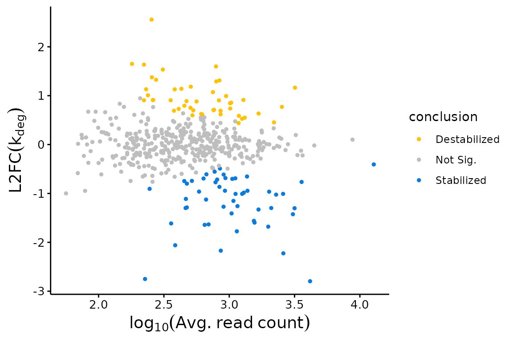

Differential kinetic analysis with bakR
Isaac Vock
Source:vignettes/Getting-Started.Rmd
Getting-Started.RmdAbstract
In a standard RNA-seq experiment, differential expression analysis is incredibly common. The idea is to compare the expression of thousands of RNA features (e.g., transcripts) between two conditions, which I’ll refer to as the reference and experimental samples. Once you have compiled a list of genes whose expressions differ significantly between the two conditions, a reasonable follow-up question is “what caused the change in each of the genes”? The three broad answers to that question are 1) Something altered the RNA synthesis rates; 2) Something altered the RNA degradation rates; or 3) A little bit of both 1) and 2). Unfortunately, it is difficult to answer this question unambiguously with stanard RNA-seq alone.
If the kinetics is of interest to you, then a recently developed solution to this problem is nucleotide recoding RNA-seq, which exists in several fundamentally similar flavors, the primary ones being TimeLapse-seq, SLAM-seq, and TUC-seq. The strategy involves feeding cells with a metabolic label (typically 4-thiouridine, a.k.a. s4U), extracting the RNA as you normally would for RNA-seq, and then using a unique chemistry to convert the metabolic label into something that a sequencer will read as a different base (e.g., a cytosine analog for s4U). Thus, labeled and unlabeled reads can be separated bioinformatically upon sequencing by the presence of mutations (e.g., U-to-C mutations).
One problem though; the metabolic label must 1st get into cells, and then it must compete with the normal nucleotide for incorporation into RNA. The result of this is that mutation rates are typically low (often around 5% in RNA produced during metabolic labeling, meaning that each U in a sequencing read from these RNAs has about a 5% chance of being mutated to a C), making simple and definitive separation of labeled and unlabeled reads impossible. In addition, statistical power of comparative analyses of NR-seq datasets can be limited by the small number of replicates typically collected, and the need for multiple-test adjustment of p-values. The solution: advanced statistical modeling implemented by bakR (now published in RNA), an R package for analyzing nucleotide recoding RNA sequencing data. bakR relies on Bayesian hierarchical mixture modeling of NR-seq data to increase statistical power by sharing information across transcripts and address the aforementioned challenges.The analyses implemented in this package will enable you to perform differential kinetic analysis just as easily as you can perform differential expression analysis, allowing you to elucidate the mechanisms of regulated gene expression.
Necessary Setup
Of course you will want to load the bakR package for this vignette; instructions to do so can be found at this link. Also, you’ll want to set the seed so as to ensure the results you get reproduce those presented in the vignette.
Step 1: Creating a bakRData Object
The 1st step to using bakR is to create a bakRData object. A bakRData object consists of two components: a cB data frame and a metadf data frame. cB stands for counts binomial and contains all of the information about mutations seen in sequencing reads in each sample sequenced. metadf stands for metadata data frame and contains important information about the experimental details of each sample (i.e., how long the metabolic label feed was, which samples are reference samples, and which are experimental samples).
Lets get an idea for what a cB looks like by taking a peak at an example:
| sample | nT | XF | TC | n |
|---|---|---|---|---|
| WT_ctl | 9 | ENSG00000156928 | 0 | 1 |
| WT_ctl | 11 | ENSG00000105849 | 0 | 3 |
| WT_ctl | 12 | ENSG00000100242 | 0 | 3 |
| WT_ctl | 12 | ENSG00000105849 | 0 | 4 |
| WT_ctl | 12 | ENSG00000196295 | 0 | 1 |
| WT_ctl | 12 | ENSG00000198937 | 0 | 1 |
One key aspect of the cB dataframe to keep in mind is that each row corresponds to a set of reads providing identical data. To help that make more sense, and to understand what information the cB tracks, let’s go through the contents of each column:
- sample: This is the name of the sample from which the reads described in this row originated. Usually this will be some sort of character vector that you have defined.
- TC: Number of U-to-C mutations (assuming using s4U as the metabolic label). Called TC because technically the data is T-to-C mutations in reverse-transcribed RNA
- nT: Number of Ts (Us in the RNA) in the sequencing read(s)
-
XF: Name of the feature (gene, exon, etc.) that the
read comes from. Kinetic parameters will be estimated for each feature,
so this should represent the functional unit who’s metabolic kinetics
you are interested in.
- XF stands for “exonic feature”, since in most cases you should only be considering reads that map to definitively exonic locations. Introns are typically rapidly turned over and thus will be highly labeled species that will bias estimates of mature transcript stability.
- n: Number of reads with identical data for the other 4 columns. For example, n = 3 in the 2nd row means that there are 3 reads from sample WT_cntl (WT cells not treated with s4U) that mapped to XF ENSG00000100242 (SUN2), had 0 T to C mutations, and had 11 Ts.
The structure of the cB file most closely reflects the output of a pipeline for analyzing nucleotide recoding RNA-seq data developed by the Simon lab (available as a Snakemake reimplementation here).
Now let’s look at the corresponding metadf dataframe:
# Load metadf data frame; will be loaded as metadf in global environment
data("metadf")
# Print the transpose of metadf
# Rows will be the columns and columns will be the rows
print(t(metadf))| WT_ctl | WT_2 | WT_1 | KO_ctl | KO_2 | KO_1 | |
|---|---|---|---|---|---|---|
| tl | 0 | 2 | 2 | 0 | 2 | 2 |
| Exp_ID | 1 | 1 | 1 | 2 | 2 | 2 |
The transpose of metadf is displayed above to save space (so the columns depicted are the rows of metadf, and vice versa). Metadf has significantly less information than the cB data frame, but it’s crucial information. One extremely important feature of metadf is its row names (column names as depicted above). Examine the row names and compare them to the sample names
# cB sample names
print(unique(cB_small$sample))
#> [1] "WT_ctl" "WT_2" "WT_1" "KO_ctl" "KO_2" "KO_1"They’re the same, and they HAVE TO BE!! Each row of metadf corresponds to a sample, and the order in which the sample names appear as the row names of metadf MUST correspond to the order they appear in cB sample column. (NOTE: in bakR version 1.0.0 this is no longer the case; the sample names in the cB just have to appear in the metadf in any order).
Keeping in mind that each row represents a sample, the content of the columns are:
- tl: The length of the metabolic labeling feed. This can be in any units (the simulated data puts it in terms of minutes), but if no s4U was fed to a sample, tl must be 0 for that sample. While not technically necessary to run bakR, we always highly suggest including -s4U controls.
-
Exp_ID: Stands for “Experimental ID” and is a
numerical ID that denotes which samples are from the reference condition
and which experimental samples belong to the same “treatment”. In this
simulated dataset, there are two conditions, a reference condition
(samples 1, 2, 3, and 7) and a single experimental condition (samples 4,
5, 6, and 8). The reference condition must be given numerical ID
1 and the experimental conditions must be given
sequential numerical IDs starting from 2 (i.e., 2, 3, 4, …).
You can have more than one experimental sample, but all comparisons will
only be done with respect to one reference sample.
- If you want to compare two experimental samples, this can be done with the output of the models, though it will require a bit of post-hoc work on your end.
Once you have these two data frames correctly constructed, you can create a bakRData object in one line of code.
# Create bakRData object
bakRData <- bakRData(cB_small, metadf)Step 2: Fitting the Efficient Model
bakR implements several blends of fundamentally similar statistical models to perform differential kinetic analysis. No matter your intentions though, you must first fit data with the most efficient model available. This model (implemented in the fast_analysis() function, so see ?fast_analysis for more details) estimates mutation rates and then finds the maximum likelihood estimate (MLE) for the fraction of sequencing reads from new RNA (new meaning RNA synthesized after the start of metabolic labeling) for each feature in each s4U fed sample. The reason you have to run this model is that some part of its output will be used by every other model you can run with bakR. More on that later though; first, let’s create a simulated dataset and fit bakR’s model with the efficient implementation. Using a simulated dataset will allow us to compare the results to the ground truth and validate its accuracy.
# Simulate a nucleotide recoding dataset
sim_data <- Simulate_bakRData(500)
# This will simulate 500 features, 2 experimental conditions
# and 3 replicates for each experimental condition
# See ?Simulate_bakRData for details regarding tunable parameters
# Extract simulated bakRData object
bakRData <- sim_data$bakRData
# Extract simualted ground truths
sim_truth <- sim_data$sim_list
# Run the efficient model
Fit <- bakRFit(bakRData)
#> Finding reliable Features
#> Filtering out unwanted or unreliable features
#> Processing data...
#> Estimating pnew with likelihood maximization
#> Estimating unlabeled mutation rate with -s4U data
#> Estimated pnews and polds for each sample are:
#> # A tibble: 6 × 4
#> # Groups: mut [2]
#> mut reps pnew pold
#> <int> <dbl> <dbl> <dbl>
#> 1 1 1 0.0502 0.00100
#> 2 1 2 0.0500 0.00100
#> 3 1 3 0.0501 0.00100
#> 4 2 1 0.0501 0.00100
#> 5 2 2 0.0500 0.00100
#> 6 2 3 0.0503 0.00100
#> Estimating fraction labeled
#> Estimating per replicate uncertainties
#> Estimating read count-variance relationship
#> Averaging replicate data and regularizing estimates
#> Assessing statistical significance
#> All done! Run QC_checks() on your bakRFit object to assess the
#> quality of your data and get recommendations for next steps.bakRFit() is used here as a wrapper for two functions in bakR: cBprocess() and fast_analysis(). cBprocess() will extract and properly format the information needed for all statistical models from the bakRData object and fast_analysis() will perform the efficient analysis. This should take no more than a minute to run. Messages are printed along the way to keep you updated as to the progress of the analysis.
One of the most important messages is that regarding the estimated pnews and pold. The pnews are the estimated mutation rates of reads from new RNAs (new meaning RNAs synthesized after the start of s4U labeling) in each sample (muts = Exp_ID, and reps = a numerical replicate ID that corresponds to the order replicates appear in the cB), and pold is a global estimate of the background mutation rate used in all analyses. The simulated mutation rates are 0.05 for new reads and 0.001 for old reads in all samples this simulation, so the estimates are pretty darn close. You can also input mutation rate estimates from elsewhere (say a run of the full Stan model implemented in bakR) to bakRFit():
# Run efficient model with known mutation rates
# Pass the Fit object rather than the bakRData object and set FastRerun to TRUE
Fit <- bakRFit(Fit,
FastRerun = TRUE,
pnew = rep(0.05, times = 6),
pold = 0.001)
#> Using provided pnew estimates
#> Using provided pold estimate
#> Estimated pnews and polds for each sample are:
#> mut reps pnew pold
#> 1 1 1 0.05 0.001
#> 2 1 2 0.05 0.001
#> 3 1 3 0.05 0.001
#> 4 2 1 0.05 0.001
#> 5 2 2 0.05 0.001
#> 6 2 3 0.05 0.001
#> Estimating fraction labeled
#> Estimating per replicate uncertainties
#> Estimating read count-variance relationship
#> Averaging replicate data and regularizing estimates
#> Assessing statistical significance
#> All done! Run QC_checks() on your bakRFit object to assess the
#> quality of your data and get recommendations for next steps.Since we’ve already run the fast_analysis once, we can speed up the analysis by passing the Fit object from the first run rather than the bakRData object. This allows bakR to skip the time consuming pre-processing steps. Just make sure to set FastRerun to TRUE.
If you run into problems with the default mutation rate strategy (e.g., the mutation rate estimates don’t seem to make sense) another slightly less efficient solution is to use MCMC implemented in Stan to estimate mutation rates. The idea is to fit a binomial mixture model to only a small subset of features with sufficient sequencing depth so that the model has enough data to work with while still running in a reasonable amount of time:
# Set StanRateEst to TRUE to use Stan to estimate rates
# low_reads and high_reads defines the read count cutoffs used to select features
# default = between 1000 and 5000 reads
# RateEst_size determines the number of features to use (default = 30)
Fit <- bakRFit(Fit,
FastRerun = TRUE,
StanRateEst = TRUE)The “Troubleshooting” vignette has more details about when certain mutation rate estimation strategies are preferable.
No matter how you decide to run the fast model, you might wonder how well it worked. As mentioned earlier, one benefit of using simulated data is that you can easily answer that question by comparing the simulated parameters (e.g., the fraction new) to the model’s estimates:
# Features that made it past filtering
XFs <- unique(Fit$Fast_Fit$Effects_df$XF)
# Simulated logit(fraction news) from features making it past filtering
true_fn <- sim_truth$Fn_rep_sim$Logit_fn[sim_truth$Fn_rep_sim$Feature_ID %in% XFs]
# Estimated logit(fraction news)
est_fn <- Fit$Fast_Fit$Fn_Estimates$logit_fn
# Compare estimate to truth
plot(true_fn, est_fn, xlab = "True logit(fn)", ylab = "Estimated logit(fn)")
abline(0, 1, col = "red")Looks pretty good to me! Note, a key assumption that is common to make when analyzing NR-seq data is that the population of cells you are analyzing is at steady-state. This means that RNA levels were constant during the label time, i.e., your cells were not actively responding to a perturbation during metabolic labeling. In that case, the fraction new (\(\theta\)) and the degradation rate constant are related as follows:
\[ k_{\text{deg}} = -\frac{\text{ln}(1 - \theta)}{\text{tl}} \]
To run the heavier, more trustworthy models, just rerun bakRFit() on the Fit object, but with either the StanFit or HybridFit parameters set to true.
# Load options that will make running models more efficient
rstan::rstan_options(auto_write = TRUE)
options(mc.cores = parallel::detectCores())
# Run Hybrid model (This might take several minutes to run)
Fit <- bakRFit(Fit, HybridFit = TRUE)
# Run Full model (This might take ~10-30 minutes to run)
Fit <- bakRFit(Fit, StanFit = TRUE)You might rightfully ask what it is that makes these models “more
trustworthy”? Didn’t we just show that the logit(fn) estimates for the
fast model were pretty good? Why bother with these computationally
expensive models?? The answer is that a lot of the magic happens at the
level of uncertainty quantification. While all models are going to agree
pretty well on estimates for kinetic parameters, they won’t necessarily
agree on how uncertain those estimates are. The fastest model takes a
lot of shortcuts and uses a lot of approximations that make it fast but
also make its uncertainty quantification less rigorous. I like to say
that the fast model should be used for initial investigations of your
data, a rapid means by which to satisfy your desire to dive into
whatever exciting biology you might be exploring. When you have a sense
of how promising your data is and what it is you want to analyze, switch
on over to the heavier models. These will give you more peace of mind
and allow you to comfortably dig a little deeper into your datasets as
you prepare for stunning presentations and groundbreaking papers. The
Hybrid implementation (HybridFit = TRUE) should usually be
your go-to for this, but particularly challenging to analyze datsets
(e.g., those with low new read mutation rates) can benefit from the full
MCMC implementation (StanFit = TRUE).
The Fit objects contain lists pertaining to the fits of each of the models. The possible contents include:
- Fast_Fit: Result of the initial fitting of the bakRData object. To learn more about its contents, see ?fast_analysis()
- Data_lists: Processed data that can be passed to the statistical models
- Hybrid_Fit: Result of running bakRFit() on the Fit object with HybridFit = TRUE. To learn more about its contents, see ?TL_stan().
- Stan_Fit: Result of running bakRFit() on the Fit object with StanFit = TRUE. Its general contents are identical to the Hybrid_Fit, even though the models are different.
Step 3: Visualizing the Results
bakR provides a variety of easy to use functions for beginning to investigate your data. The visualizations are particularly aimed at revealing trends in RNA stabilization or destabilization. Analyzing changes in RNA synthesis rate will require pairing the output of bakR with that of a differential expression analysis tool, like DESeq2, edgeR, or limma. More on that in the “Differential synthesis analysis” vignette.
One visualization powered by bakR is a L2FC(kdeg) MA plot. Each point in these plots will represent a feature-condition combination. The x-axis is the average number of sequencing reads mapping to that feature, averaging over all replicates in both the experimental and reference condition. The y-axis is the difference in stability between the reference and experimental condition, quantified as a log2-fold change (L2FC) in the degradation rate constant (kdeg). Positive values of L2FC(kdeg) represent features that are less stable (have a higher kdeg) in the experimental condition relative to the reference condition. Negative values thus represent features that are more stable in the experimental condition. The plotMA function in bakR allows you to make this plot with two inputs, the bakRFit object and the model fit to use (MLE, Hybrid, or MCMC):
## MA Plot with Fast Fit
bakR::plotMA(Fit, Model = "MLE")
If you have more than one experimental condition, you can choose to plot all comparisons or just a subset of those in which you are interested. See the Exps and Exp_shape parameters in the ?plotMA help file for details.
Another common plot to make with the bakR fits is a volcano plot. The x-axis in a volcano plot is the same as the y-axis of an MA plot (so L2FC in a kinetic parameter), and the y-axis is a measure of statistical significance (e.g., FDR adjusted p-value), usually on a -log10 scale. The plotVolcano function is here to help you with this one too, containing many of the same parameters as plotMA:
## Volcano Plot with Fast Fit; significance assessed relative to an FDR control of 0.05
plotVolcano(Fit$Fast_Fit)While volcano and MA plots are great for visualizing the results of bakR’s model fits, another important class of plots are those to detect anomalies. Sometimes, high-throughput sequencing datasets are plagued by batch effects, biases that effect one or a few of your samples. These can lead to inflated false discovery rates and/or reduced power and are thus important to look out for. One simple way to see if there are large-scale biases present in any of your samples is to perform principle component analysis (PCA), a dimension reduction algorithm that will project your high-dimensional sequencing data onto a few dimensions. bakR specifically implements a novel fraction new PCA, where the high-dimensional object to be compressed is a matrix of fraction new estimates, with each column of the matrix corresponding to a sample and each row a feature (e.g., a transcript). If replicates don’t cluster together in the 2D PCA plot produced by bakR’s FnPCA, that could indicate the presence of batch effects:
## 2D PCA plot with replicate fraction news
# The equivalent function prior to version 1.0.0 is FnPCA, now deprecated in
# favor of FnPCA2.
FnPCA2(Fit, Model = "MLE")In this case, replicates separate from each other fairly well, which is promising and the difference between the red point in the lower left and those in the upper left is not significant enough to cause concern.
Step 4: Where to go from here
I hope that this vignette has provided a useful introduction to using bakR with your nucleotide recoding RNA-seq datasets. Inevitably, not all of your questions will be answered in the Getting-Started vignette. Some of your remaining quandaries may be challenging problems specific to your exciting research, the unavoidable roadblocks of doing science that you will eventually conquer, but with little help from any documentation I could dream of writing. That being said, I can still imagine many important implementation questions not addressed here. Therefore, a number of additional vignettes exist to discuss:
- Performing differential synthesis rate analyses with bakR.
- Providing fraction new estimates as input rather than a cB data frame (as of version 1.0.0).
- Correcting for disproportionate loss of metabolic label containing RNA/reads.
- Dissecting the mechanisms of gene expression regulation while relaxing the steady-state assumption.
- General advice when troubleshooting analyses of NR-seq datasets.
In addition, it’s possible that you will run into warnings about r_hats and n_eff while running some of the heavier Stan models. If that is the case, I would suggest checking out some of the great documentation written by the Stan team. In short though, warnings from Stan are a sign that the model did not converge. A possible cause of this is anomalies in your data. Some challenges that I have come across that could lead to such warnings include:
- Did you analyze a mix of technical and biological replicates? Technical replicates will have much less replicate to replicate variability than biological replicates, which will confuse and crash the models.
- Is your s4U label time abnormally long or short? If you are getting warnings from running the MLE implementation about logit(fn)s being at the lower or upper bounds, this could be the case. It means that there will be some extreme mutational data (e.g., 0 mutations in any sequencing read) that will make analysis with the MCMC implementation more difficult. Try filtering out these extreme transcripts and rerunning bakR if this is the case.
- Do you have any extreme batch effects. Check the FnPCA2 plot; extreme differences between replicates could also break the models.
- Are you analyzing short sequencing reads? bakR has not yet been fully validated on short sequencing read nucleotide recoding RNA-seq data (e.g., read lengths less than 50 nucleotides), so exercise caution when analyzing this kind of data with bakR. Mutation rate estimation can also pose a challenge for bakR in this case. To get around these problems, try using the mutation rate estimates from the MCMC implementation (which I have found to be accurate even when model convergence is an issue) in the MLE implementation.
Sometimes, small warnings from Stan (like a few max treedepth warnings here and there) are no cause for concern. How do you know whether or not there is a serious problem though? I would suggest comparing the output of the Hybrid/MCMC implementation to that of the MLE implementation. In particular, check the correlation between the L2FC(kdeg) estimates. If the correlation is good, then there probably is nothing to worry about. If the estimates for a handful of transcripts differ wildly between the implementations though, that is strong evidence that the convergence issues are serious and that one of the anomalies mentioned above is afflicting your data.